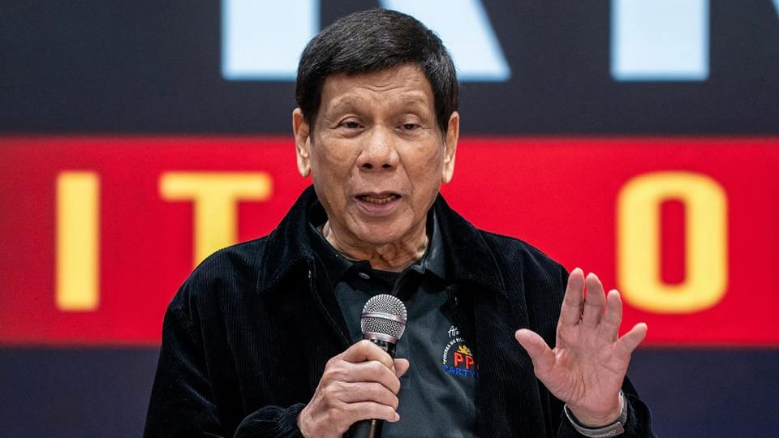

世界苦茶03月11日新闻 | 43条 | 卢比奥宣布取消83%USAID项目

卢比奥宣布取消83%USAID项目 | 菲律宾前总统杜特尔特被拘留 | 复旦大学大幅削减文科生 | 马英九因为统战行为而移民署约谈
三个水枪手
苦茶数据
美元兑人民币：7.25（昨日7.25，前日7.24）
美元兑日元：147.26（昨日147.61，前日148.02）
上证指数：3350（昨日3352，前日3372）
标普500指数：5614（昨日5770，前日5738）
比特币：80301（昨日82367，前日86041）
布伦特原油：69.31（昨日70.04，前日70.36）
中国新闻
• 中国外交部重申争取两岸和平统一 ：中国大陆官方星期一强调，愿以最大诚意、尽最大努力，争取两岸和平统一的前景。中国外交部发言人毛宁在例行记者会上说，1971年联大第2758号决议明确了世界上只有一个中国，台湾不是一个国家，台湾是中国的一部分，明确了中国在联合国的席位只有一个，中华人民共和国政府是唯一合法代表。毛宁也说，为了恪守这一决议的规定，联合国及其专门机构在提及台湾时，使用的称谓就是“中国台湾省”。联合国秘书处法律事务办公室的官方法律意见明确指出，“台湾作为中国的一个省没有独立地位”。这是联合国的一贯立场，均有案可查。
• 中国批美方将经贸问题政治化 ：中国外交部星期一点名批评美国，称无论美国如何包装，都掩盖不了将经贸问题政治化、武器化，实施对华遏制打压的企图。中国外交部发言人毛宁星期一主持例行记者会。有记者提问，美国财长贝森特多次表态称中国经济过度依赖出口，美国寻求公平对等的贸易。中国对此有何评论？毛宁回应，今年中国全国两会政府工作报告明确提到，内需对中国经济增长贡献率近70%，并把全方位扩大国内需求作为今年十个方面工作任务中的第一条，强调要全方位扩大国内需求，使内需成为拉动经济增长的主动力和稳定锚。
• 马英九基金会访团引发争议 ：马英九基金会去年底邀请中国大陆高校师生访团访台交流，该访团其中一名学生曾因说了“中国台北”，在台湾引起争议。据台媒报道，台湾移民署星期一下午将就此约谈马英九。综合中时新闻网和ETtoday新闻云报道，马英九基金会去年底邀请奥运金牌乒乓球选手马龙领衔的陆生团访台交流，陆生团中一名复旦大学女学生宋思瑶祝贺“中国台北”棒球队勇夺世界12强棒球赛冠军，在台湾引起争议。当时，台湾陆委会扬言祭出处分，称未来不让马英九基金会再邀请陆生赴台，同时强调后续会依照既有的机制，进一步做行政方面的处分。
• 菲律宾称南海行动受国家利益驱动 ：菲律宾官方强调，菲国在南中国海采取的行动，是出于国家利益。据路透社报道，菲律宾外交部星期一针对中国外长王毅早前的言论发声明说，中国应该意识到菲律宾是一个独立主权国家，菲国的行动和决定完全出于国家利益驱动，并非受到其他国家的指示。菲国外交部称，“真正的问题在于中国拒绝遵守国际法”以及其海上非法、胁迫性、强硬和欺骗性行为，给菲律宾社区带来的影响。
• 中国伊斯兰教协会更换会徽 ：香港媒体报道，中国伊斯兰教协会传出更换会徽。据香港《星岛日报》星期一报道，全国两会期间传出中国伊斯兰教协会微信公众号标识已经更换。之前的中国伊协会徽是绿色，阿拉伯色彩浓厚，并且附有英文名称。新的会徽则改为蓝色，更加简化，没有英文名称，“宗教色彩淡化，同时体现国家主体性”。报道称，中国大力推进宗教中国化，当中伊斯兰教中国化是重中之重。中国伊斯兰教教徒大概有2000多万，主要聚居区在新疆、宁夏、甘肃、青海和云南。近年，官方主要整治一些领域清真概念泛化，以及清真寺的建筑风格去阿拉伯化、去沙特化，要求宗教建筑体现中国特色、中国风格。
• 藏人纪念西藏抗暴66周年，印度警方阻拦 ：几十名流亡印度的藏人星期一前往新德里中国驻印大使馆前举行抗议示威，以纪念西藏反抗中国统治的大起义66周年。1959年3月10日，反抗中国在西藏统治的藏人武装占据的罗布林卡遭到解放军的炮击，迫使达赖喇嘛和八万藏人越境进入印度流亡。3月10日因此被称为西藏起义纪念日或西藏抗暴纪念日，全球各地的藏人都会在这一天以抗议示威或其他方式予以纪念。根据美联社的报道，星期一几十位藏人向中国驻印大使馆门前聚集，他们像往年一样遭到印度警察的拦阻，有些示威者还与警察发生了摩擦和肢体冲突，甚至因此被警方拘留。
• 复旦大学宣布压减文科本科招生，原占招生人数34%，今年调整为“文、理、医、新工科、交叉学科各占20%”： 下一步，存量只减不增，本科招生增量全部投放交叉领域。极限决策，将既有工科院系全部拆分，一步到位组建6个“新工科”创新学院，以构建“从0到10”系统创新能力。校长金力在两会报告说，改革是奉命而为，奉的是支撑国家战略、服务现代化需要、满足民生需求的强国使命。他受访说 ，复旦文科教师占比38.8%，“文科实力可以跟人民大学相媲美”。有人说改革后吃饭都成问题，他反驳说，大学是人民的大学，不是老师的大学，不能为了满足老师的工作量就决定办学方向。 （翻评：国家不需要文科生，大家自生自灭吧。）
亚太印太新闻
• 菲律宾前总统杜特尔特3月11日被警方拘留： 当天稍早国际刑警组织根据国际刑事法院的逮捕令，对杜特尔特发出了红色通缉令。杜特尔特上午从香港乘飞机抵达菲律宾后不久被警方拘留。杜特尔特担任菲律宾总统期间开展扫毒行动。警方称有6200名嫌疑人在枪战中被击毙。但活动人士表示，法外处决人数要高得多。国际刑事法院将对杜特尔特涉嫌危害人类罪进行调查。杜特尔特10日表态已准备好被捕，并为其扫毒行动辩护，否认下令警察杀死嫌疑人。
• 朝鲜谴责韩美军演，称或引发战争 ：韩国和美国举行“自由护盾”联合军事演习，朝鲜对此谴责称是“挑衅行为”，并警告“误射”可能引发战争。据朝鲜官方媒体报道，朝鲜外务省星期天说：“这是导致朝鲜半岛局势紧张的危险挑衅行为。”韩联社也报道，朝鲜外务省称，韩美联合军演只会让朝鲜更有理由强硬应对，美国须警惕安全威胁加剧的后果。
• 朝鲜发射多枚弹道导弹，韩美高度警戒 ：韩美展开联合演习之际，韩国联合参谋本部称，朝鲜发射多枚弹道导弹。韩联社报道，韩国参谋长联席会议星期一说，韩国在下午1时50分发现朝鲜从黄海水域朝西海发射多枚不明弹道导弹。韩国军方称，已加强监视和警戒。
• 美国称台湾是军售交付首要目标 ：美国在台协会处长谷立言告诉台湾媒体，台湾是美国军售交付的优先首要目标，美国也在努力加快交货期程，尤其是不对称作战相关设备。谷立言接受台湾《自由时报》专访时说，随着乌克兰战事终结，美国应该会再将重心重新移回台湾的防御需求。《自由时报》官网星期一刊登专访内容。彭博社报道，由于美国在俄乌战争爆发后，专注于为乌克兰提供支持，美国对台军事装备交付近年来受到影响。
• 韩执政党支持率反超最大在野党 ：韩国最新民调显示，执政党的支持率反超最大在野党，两者差距在误差范围内。韩联社报道，韩国民调机构Realmeter星期一发布的最近民调显示，执政党国民力量的支持率为42.7%，较前一周上升5.1个百分点；最大在野党共同民主党为41%，较前一周下降3.2个百分点。在前一次调查中，共同民主党以6.6个百分点的优势领先国民力量党，但这次国民力量党反超，双方差距缩小至1.7个百分点，仍在误差范围内。 （翻评：可惜总统候选人执政党拿不出合理的人选。）
• 韩国空军称误投炸弹因飞行员失误 ：韩国空军3月10日发布演习战机误投炸弹事故初步调查结果，重申该事故是因飞行员错误输入坐标所致。空军介绍，涉事战机的飞行员起初输错坐标，且未正确执行三次确认坐标的流程。其中一号机飞行员急于在目标时间内投弹而没有准确用肉眼确认标的。二号机虽坐标准确，但因忙于维持飞行队形，而未察觉到投弹地点在坐标范围之外。参加韩美联合演习的两架KF-16战斗机3月6日分别误投4枚MK-82炸弹，炸弹落入训练场外侧的居民区。截至发稿，该事故造成19名平民、12名军人受伤，152栋建筑受损。
科技新闻
• 新加坡青年涉美最大加密货币盗窃案 ：狮城青年涉美国最大加密货币盗窃案，被控与同伙窃走价值逾2.3亿美元比特币，还爆出在夜店一晚挥霍超过50万美元，甚至购入30余辆豪车，生活极尽奢华。20岁新加坡籍男子蓝马龙涉美国史上最大规模的加密货币盗窃案，在当地被捕并被控上法庭。他的同谋是来自洛杉矶的21岁男子杰安迪尔·塞拉诺。两人被控串谋窃取2亿3000万美元的加密货币和洗钱，这笔资金来自美国华盛顿特区的一名受害者。
• 中国富豪秘密投资马斯克公司 ：富有的中国投资者，据报正向美国亿万富翁马斯克控制的私人公司投入数千万美元，并采用一种不会让公众看到其身份的安排。路透社星期天转述英国《金融时报》的报道称，据参与交易的资产管理者和投资者称，这些投资是通过特殊目的载体进行的，以避免在中美两国关系处于低谷之际，惹恼美国当局和对中国资本持谨慎态度的公司。路透社报道，三家中资资产管理公司向《金融时报》说，过去两年，它们向投资者出售了三家马斯克控制的私人科技公司SpaceX、xAI和Neuralink的股票，总价值超过3000万美元。
• 特朗普称TikTok收购交易或很快达成 ：美国总统特朗普说，他正在与TikTok美国业务的四个潜在买家进行谈判，并表示交易可能“很快”就会达成。彭博社报道，特朗普星期天在空军一号上对记者说：“我们正在与四个不同的买家打交道，很多人都想要它。”不过，他没有透露这四个竞争者的名字，他也未表态倾向哪一方，只是表示“这四家都不错”。
• 特斯拉全球抗议升温，超充站遭破坏 ：全球消费者对美国总统特朗普的主要资助者、全球首富埃隆·马斯克的态度日益恶化。在美国及其他国家，“打倒特斯拉”抗议活动持续升温，特斯拉经销商标牌被涂鸦，停车场遭汽油弹袭击，充电站屡次被纵火。据彭博社援引美国网站数据，仅在星期六和星期天，就发生了72起针对特斯拉展厅、超级充电站及其他设施的抗议活动。不少地点出现严重破坏，有公众人物甚至将出售特斯拉的收益捐给公共广播机构，以表达不满。《华盛顿邮报》报道，3月间，马萨诸塞州利特尔顿的一家购物中心多台特斯拉超级充电桩被纵火焚毁。在马里兰州，破坏者喷涂“不要马斯克”及类似纳粹标志的图案。今年2月，一名持有AR式半自动武器的男子在俄勒冈州塞勒姆向一家特斯拉展厅开枪。而几周前，他曾向同一家车行的车辆和窗户投掷莫洛托夫鸡尾酒，造成约50万美元的损失。
• 美国宇航局将裁撤首席科学家和其他职位： 美国国家航空航天局周一宣布，该机构将取消首席科学家职位，并关闭一个研究太空和技术政策事务的办公室。这一轮裁员将影响包括首席科学家凯瑟琳·卡尔文和其他23名员工。美国航空航天局代理局长珍妮特·佩特罗当地时间2月12日曾表示，埃隆·马斯克的“政府效率部”计划审查航空航天局的支出。珍妮特·佩特罗称，已有“数百名”航天局员工接受了美国总统特朗普政府的买断计划。
财经新闻
• 泰国政府推出经济刺激计划 ：为刺激经济增长，泰国政府计划注入更多资金，力争今年经济增速突破3%。此举旨在缓解全球贸易紧张局势和泰国货币波动对经济造成的压力。彭博社报道，泰国经济刺激委员会已批准政府主导的现金援助计划第三阶段。财政部长比猜星期一在会后对记者说，最新一轮援助金额为270亿泰铢，计划在年中发放给16岁至20岁的泰国公民。这笔资金预计惠及约270万名受益者，每人可获得1万泰铢。资金将通过“数字钱包”应用分发，旨在刺激消费。比猜指出，这一方案还需内阁批准。
• 英国企业削减招聘，起薪增速创新低 ：一项调查显示，随着就业成本即将上升，英国企业纷纷缩减开支，导致今年2月新聘员工的薪资增速降至四年来最低水平。据彭博社报道，英国招聘与就业联合会和毕马威共同进行的这项调查发现，起薪增幅已回落至新冠疫情期间的低点。此外，招聘机构还观察到职位发布数量和招聘活动出现下降。这一结果表明，英国劳动力市场正在逐渐降温。为应对财政大臣里夫斯计划于4月生效的两项政策——260亿英镑的工资税上调，以及最低工资的再度大幅上涨，企业正采取预防性措施。
• 中国对美国农产品加征关税 ：中国对一系列美国农产品征收至多15%关税的措施星期一生效，这可能加剧全球两大经济体之间的贸易争端。美国对华关税上星期二提高到20%后，中国同天将20多家美国实体列入出口管制管控、不可靠实体清单，并对美国部分农产品加征10%至15%关税。彭博社报道称，中国对美国部分农产品加征的关税影响深远，涉及从牛肉、家禽到谷物的各种商品。
• 加拿大对美电力加征25%附加费 ：加拿大安大略省省长道格·福特宣布，自3月11日起向美国电力用户加收25%的附加费。若贸易战继续，他将继续提高电费甚至完全中断电力供应。安大略省目前为美国纽约、密歇根、明尼苏达等三州约150万户家庭和企业供电。
• 俄罗斯大幅提高税费以遏制中国车进口： 去年俄罗斯购买了逾100万辆中国汽车，约占中国汽油车出口量的30%。根据乘联会的数据，这种激增使得中国品牌占据了63%的俄罗斯市场，而俄罗斯本土品牌的市场份额则降至29%。今年1月，莫斯科方面提高了作用类似于关税的“报废税”，大多数乘用车的报废税提高到667000卢布，是去年9月时的两倍多。报废税每年将提高10%-20%，直至2030年。俄罗斯最近有一项调查还发现三家主要的中国卡车制造商违反安全标准。官员们暗示可能会对进口汽车实施新的合规和认证检查。奇瑞是在俄罗斯销量最高的中国汽车制造商，该公司2024年前三个季度在俄罗斯销售了43万辆汽车，相当于其总销量的28%。
• 东风本田发动机的广州工厂产能将减半： 10日从本田公司采访获悉，本田将把中国广东省广州市的发动机工厂产能削减一半。这相当于其在华销售的燃油车的三成部分。中国正在迅速转向纯电动汽车，本土厂商发展势头迅猛。本田被迫陷入苦战，将加速优化生产体制。将实施产能减半的是本田与中国东风汽车集团合资企业“东风本田发动机”的广州工厂。本月底将把2条产线减少为1条，发动机组装能力将从每年52万台减少一半。本田在华销量持续低迷，2024年的销量为85万辆，较上年减少三成，创10年新低。为优化生产体制，本田7家在华整车工厂中，有3家已在2024年至2025年1月期间关闭或停产。
俄乌战争
• 美乌矿产协议谈判本周展开 ：美国中东特使维特科夫说，美国期待本周与乌克兰的谈判取得显著进展，希望能达成一项关键矿产协议。路透社报道，维特科夫星期一接受福克斯新闻采访时透露，美方代表本周将在沙特阿拉伯与乌克兰代表会晤。“我认为我们这次去是抱着取得重大进展的期待。”对于乌克兰总统泽连斯基是否会回到美国签署矿产协议，维特科夫说：“我认为真的很有希望。所有迹象都非常积极。”
• 英国首相斯塔默拟召开乌克兰局势会议 ：英国首相斯塔默计划于星期六召开一次线上会议，与多国领导人共同探讨乌克兰局势。这一会议将延续本月初在伦敦举办的峰会成果。路透社报道，英国首相的发言人说道：“一如之前在兰卡斯特宫举行的峰会，首相将召开第二次‘自愿联盟’领导人会议。”斯塔默3月2日在伦敦主办了欧洲领导人峰会，并宣布制定一项四点计划：继续向乌克兰提供军事援助、对俄罗斯施加经济压力；实现持久和平须确保乌克兰主权和安全，乌克兰必须参与任何和平谈判；达成和平协议后，应继续加强乌克兰防御能力，以阻止未来侵略；建立捍卫乌克兰和平协议的自愿联盟。
• 俄或考虑临时停火，视乌克兰进展而定 ：知情人士称，如果乌克兰在实现最终和平解决方案方面取得实质性进展，俄罗斯愿意考虑临时停火。这是普京首次对特朗普总统的停火呼吁作出积极回应。彭博社引述消息人士透露，俄罗斯已在2月沙特阿拉伯举行的俄美高层会谈中传达了这一提议。但实现停火的前提是明确最终和平协议的框架原则。另有知情人指出，俄罗斯尤其要求明确未来维和任务的具体安排，包括参与国名单。俄罗斯明确拒绝北约部队驻扎乌克兰，并否决了欧洲国家提出的“志愿联盟”监督和平协议的建议。不过，俄罗斯不反对像中国这样的中立国家派遣维和部队赴乌克兰。
• 俄罗斯驱逐两名英国外交官 ：俄罗斯政府宣布，两名英国驻莫斯科使馆人员因提供虚假个人信息并涉嫌从事情报和颠覆活动，已被要求在两周内离境。综合报道，俄联邦安全局星期一发布声明指出，英国驻莫斯科使馆的一名二等秘书和另一名一等秘书的丈夫入境俄罗斯时提供虚假信息，违反了相关法律。根据这一情况，俄罗斯外交部要求两人在两周内离境。声明还提到，在英国使馆的掩护下，存在未申报的英国情报机构。当天，俄罗斯外交部也证实，已为此召见了英国驻莫斯科使馆的一名代表。
• 美国务卿鲁比奥赴沙特商谈俄乌战事 ：美国国务卿鲁比奥启程飞往沙特阿拉伯与乌克兰举行会谈，美国总统特朗普正在决定是否暂停冻结军事和情报支持。法新社报道，鲁比奥星期天晚上离开迈阿密霍姆斯特德空军基地，启程飞往沙特阿拉伯。美国国务院发言人布鲁斯说，在吉达为期三天的会谈中，鲁比奥将讨论如何“推进美国总统特朗普结束俄乌战争的目标”。美国国务院称，鲁比奥也将在吉达会见沙特王储穆罕默德。
• 波兰外长称乌克兰或需替代星链系统 ：波兰外长西科尔斯基称乌克兰可能需要寻找星链卫星互联网系统的替代方案，美国国务卿鲁比奥指责“凭空捏造”，并强烈批评他“忘恩负义”。路透社报道，马斯克旗下星链的服务费用对乌克兰及军队的互联网连接至关重要。马斯克近期在社交媒体发文说，如果他关闭Starlink，乌克兰的“整个前线都会崩溃”。对此，西科尔斯基在社媒回应说：“乌克兰的星链服务由波兰数码部支付，每年花费约5000万美元。撇开威胁受害者是否符合道德不谈，如果SpaceX被证明是不可靠的供应商，我们将不得不寻找其他提供商。”
• 乌克兰3月11日对俄罗斯首都莫斯科及周边地区发动无人机袭击。俄罗斯方面称有69架无人机被击落，袭击造成至少1人死亡、3人受伤。
• 报道称，埃隆·马斯克两年来一直与普京保持着定期联系： 据美国一份报告称，世界首富、目前是唐纳德·特朗普竞选活动核心人物的埃隆·马斯克过去两年一直与弗拉基米尔·普京保持着定期联系。《华尔街日报》援引多名现任和前任美国、欧洲和俄罗斯官员的话报道，两人之间的谈话涉及从个人到地缘政治等各个方面，其中包括俄罗斯领导人要求不要在台湾上空启动其 Starlink 卫星互联网服务，以讨好中国领导人和普京的盟友习近平。马斯克和普京之间建立秘密沟通渠道对西方安全影响巨大。这位特斯拉大亨是美国太空计划的关键参与者，拥有高级安全许可。他的公司 SpaceX 发射了美国国家安全卫星，他的 Starlink 卫星通信系统对乌克兰战争至关重要，他运营着世界上最大、最具影响力的社交媒体平台之一 X，该平台为俄罗斯的虚假宣传活动提供了载体。
其他新闻
• 叙政府与库尔德武装达成合并协议 ：叙利亚中央政府与控制叙利亚东北部的库尔德人领导的当局达成协议，包括停火并将当地主要由美国支持的部队并入叙利亚军队。临时总统艾哈迈德·沙拉和美国支持的库尔德人领导的叙利亚民主力量指挥官马兹卢姆·阿卜迪星期一签署了协议。这项协议是一次重大突破，将叙利亚大部分地区置于去年12月推翻总统巴沙尔·阿萨德(Bashar Assad)的组织所领导的政府的控制下。
• 叙利亚过渡政府称军事行动已结束 ：叙利亚过渡政府国防部发言人宣布，国防部在西部沿海地区的军事行动结束，内政部安全人员将在下一阶段行动中完成对前政权“残余势力”的打击。新华社报道，叙利亚过渡政府国防部发言人加尼星期一说，国防部武装部队过去几天成功应对了前政权“残余势力”的袭击，消灭了拉塔基亚省和塔尔图斯省多个城镇的“残余势力”，将其驱离了重要地区。他说，当地公共机构已经能够恢复工作，将为民众提供基本服务。安全部门将在下一阶段行动中继续维护民众安全，完成对前政权“残余势力”的打击。
• 以色列不满美国与哈马斯谈判 ：以色列与特朗普政府之间罕见的紧张关系开始浮现，原因是美国直接与哈马斯就人质问题展开谈判，其中涉及包括一名美国公民在内的多名人质，这一举动引发了以色列方面的不满。彭博社报道，美国人质事务特使鲍埃勒与哈马斯高级代表进行了会谈，以色列领导人对此强烈不满，并强调哈马斯是一个恐怖组织，其言论不可信赖。鲍埃勒星期天（3月9日）接受美国有线电视新闻网采访时承认，以色列确实对美哈会谈“提出了一些担忧”，但他同时指出，了解哈马斯的诉求和提议是必要的。他还补充道：“我们不是以色列的代理人，我们有自己的利益。”
• 哈佛大学暂停招聘应对资金压力 ：哈佛大学宣布暂停教职员工招聘，以应对特朗普政府可能削减联邦资金所造成的压力。据报，潜在的资金削减威胁已对美国高校的财务状况带来压力。彭博社报道，哈佛校长加伯星期一发声明说：“我们需要为各种财务状况做好准备，这些战略调整需要时间来识别和实施。因此，限制可能增加财务负担的重大长期承诺，避免进一步调整变得更加复杂是至关重要的。”哈佛拥有530亿美元的捐赠基金，是全美最富有的大学之一。目前，这所高校因涉嫌未能妥善处理校园内的反犹问题而接受政府调查。
• 美最高法院受理转换治疗禁令诉讼 ：美国最高法院同意审理一项涉及多州和地方政府的诉讼。原告指控，禁止持证咨询师尝试改变未成年人的性取向或性别认同的法令违反宪法。彭博社报道，此案的核心争议是科罗拉多州于2019年通过的法律禁止咨询师提供“转换治疗”。“转换治疗”通常指旨在改变一个人性取向或性别认同的心理干预手段。科罗拉多州的持证咨询师奇尔斯指控该禁令侵犯了她的言论自由，并称她的咨询工作是基于基督教信仰，而禁令干涉了她履行职业责任的自由。
• 全球女性工作友好度排名北欧领先 ：英国《经济学人》近日公布2024年29个发达国家的女性工作友好度排名。排名前五的国家依次是瑞典、冰岛、芬兰、挪威、法国和新西兰；瑞士、日本、韩国和土耳其则位列末四名，土耳其排名最后。北欧国家凭借在性别平等和支持工作家庭政策上的出色表现，连续13年在该指数中名列前茅。韩国的排名略有提升，从最后一名上升至第28位，土耳其则跌至末位。新西兰是进步最显著的国家，从2023年的第11名跃升至第五。
• 美国取消国际开发署83%项目 ：美国国务卿鲁比奥宣布，美国将取消美国国际开发署83%的项目。法新社报道，鲁比奥星期一在社媒平台X发文称：“经过六周的审查，我们正式取消了国际开发署83%的项目。”他补充说：“目前已取消的5200份合同耗费了数百亿美元，有些甚至损害了美国的核心国家利益。”今年1月，美国总统特朗普签署行政命令，要求冻结所有美国对外援助，以重新评估海外支出，旨在削减不符合其“美国优先”政策的项目。
• 小型飞机坠毁美国宾州五人受伤 ：一架小型飞机在美国宾夕法尼亚州兰开斯特县坠毁，导致机上五人受伤。新华社报道，兰开斯特县曼海姆镇消防局长利特尔星期天在记者会上说，这架单引擎飞机星期天下午3时左右坠毁在利蒂茨镇一座停车场。机上五人全部受伤，已被送往当地医院救治。地面十几辆汽车受损，但无人受伤。
• 特朗普称美国经济处于过渡期 ：美国总统特朗普拒绝预测美国是否会面临经济衰退，但他强调美国经济面临“过渡期”。路透社报道，特朗普星期天在福克斯新闻的《周日早间期货》节目中回应今年是否预计会出现经济衰退时说：“我讨厌预测这样的事情。过渡期是存在的，因为我们正在做的事情非常大。我们正在把财富带回美国。这需要一点时间，但我认为这对我们来说应该是一件好事。”关税一直是投资者关注的一个主要问题，特朗普反复无常的关税政策也让投资者感到不安，引发科技股抛售和多年未见的波动水平。
• 美国武器出口占全球市场43% ：瑞典斯德哥尔摩国际和平研究所发布报告称，美国在2020年至2024年间的全球武器出口市场份额已增至43%，远超法国的9.6%。受俄乌冲突等因素影响，欧洲在这一时期的武器进口量比前五年激增155%，美国供应了其中的64%。报告指出，与2015年至2019年相比，美国的武器出口量增长了21%，其市场份额从35%升至43%。此外，美国在此期间向全球100多个国家和地区提供武器，其中出口至欧洲的比例显著上升，从之前的13%猛增至35%。报告显示，法国位居全球第二大武器供应国，占比9.6%，其出口覆盖60多个国家和地区。法国向欧洲其他国家的武器出口在过去五年内增长了187%。